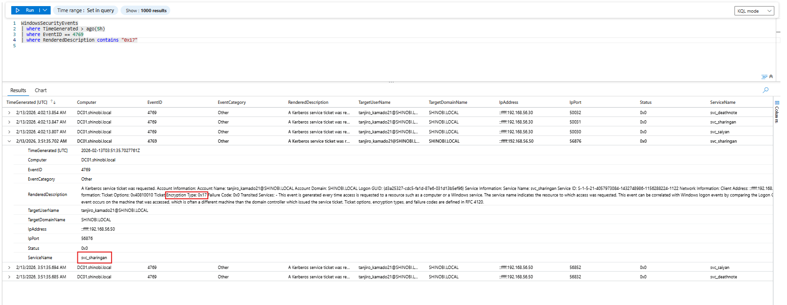
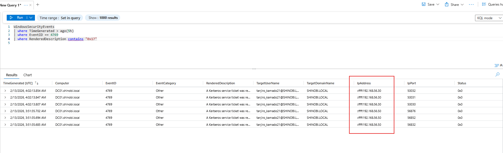
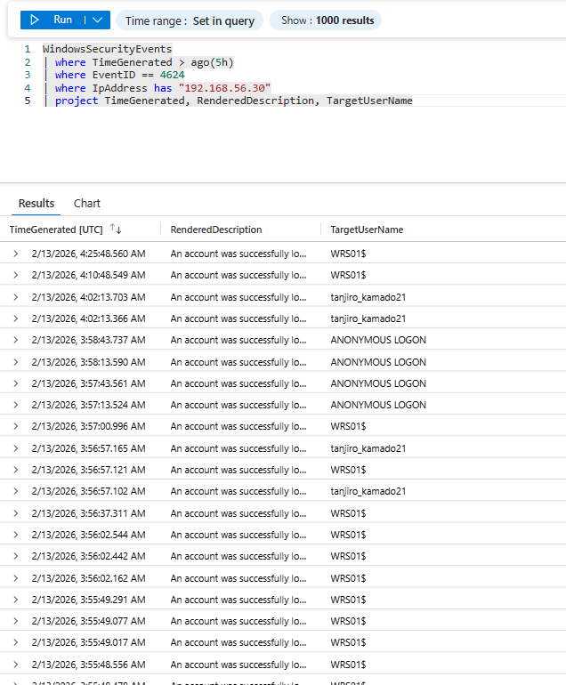

Detection & Telemetry (Kerberoasting)
Attack Vector: The attacker (tanjiro_kamado21) requested Kerberos Ticket Granting Service (TGS) tickets for specific service accounts (svc_sharingan, svc_saiyan). By forcing the use of RC4-HMAC encryption, the attacker obtained tickets that can be easily cracked offline to recover the service accounts' plaintext passwords.
Key Log Sources:
Objective: Detect the precise moment a user account requests a service ticket for another user account using weak encryption.
Logic: We focus on Event ID 4769 and apply three critical filters to isolate the attack:
0x17 (RC4-HMAC). This is the strongest indicator, as modern Windows environments should use AES.$. We are looking for a human/compromised user requesting the ticket, not a machine account performing legitimate replication or updates.$. Kerberoasting targets user accounts configured as services. Machine accounts have random 120-character passwords that are mathematically impossible to crack, so attackers ignore them.KQL Query:
WindowsSecurityEvents
| where EventID == 4769
| where RenderedDescription has "0x17" // Filter 1: RC4 Encryption (Weak)
| where not(TargetUserName endswith "$") // Filter 2: Requestor is NOT a machine
| where not(ServiceName endswith "$") // Filter 3: Target Service is NOT a machine
| where ServiceName != "krbtgt" // Exclude standard TGT operations
| project TimeGenerated, EventID, Activity="Kerberoasting", Requestor=TargetUserName, TargetService=ServiceName, TicketEncryptionType, IpAddress
Analysis:
tanjiro_kamado21 (The compromised account).svc_sharingan, svc_deathnote, svc_saiyan (The victim accounts).0x17.
Objective: Determine if the attack came from a compromised workstation or a rogue device.
A. External Source (Kali Linux)
Logic: We analyze the volume of 4769 events coming from IPs that do not map to joined workstations.
::ffff:192.168.56.30 generated a burst of TGS requests.
B. Internal Source (Host-Based Execution)
Logic: If the attack is run locally, we use Sysmon Event ID 1 to catch the specific tool execution. Artifact: The log captures Rubeus.exe being executed with the explicit command line /outfile:hash.txt. This confirms the tool was dropped to disk and run interactively.
Objective: Tie the network activity back to a specific logon session to answer "Who was logged in?" Logic: We correlate the Source IP (192.168.56.30) or the workstation (WRS01) with Event 4624 (Successful Logon) logs from the same timeframe.
KQL Query:
WindowsSecurityEvents
| where TimeGenerated > ago(5h)
| where EventID == 4624
| where IpAddress contains "192.168.56.30" or Computer == "WRS01.shinobi.local"
| project TimeGenerated, RenderedDescription, TargetUserName, LogonType, IpAddress
Analysis:
tanjiro_kamado21tanjiro_kamado21 was the active session on the machine that launched the attack, finalizing the attribution chain.
{kind=link}
{kind=link}
{kind=link}
{kind=link}